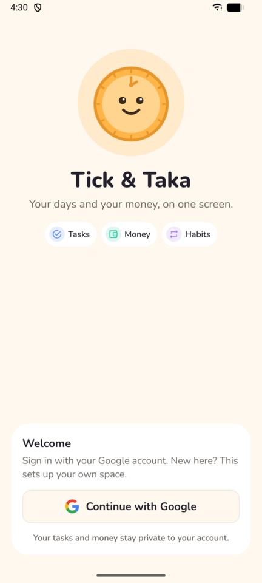
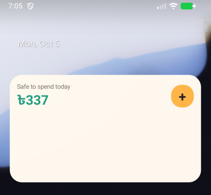

| Project | Tick & Taka (monorepo: apps/mobile, apps/api, packages/shared) |
| Date | 2026-10-07 |
| Commit | 7e2bfeb (branch fix/audit-2026-10-06) |
| Previous audits | Round 1 at 3b5438b: 64/100, 30 findings. Round 2 at df29d67: 83/100, 16 open findings (docs/audit/2026-10-06-r2/UX_Report.html). |
| Auditor role | UX Lead |
| Yardstick | PRODUCT.md (users, 5 principles, accessibility commitments) and DESIGN.md (tokens, type, layout, components), then general best practice |
| Mode | Read-only static review of the code. The app was not run: the only emulator image has no Google Play services and sign-in is Google-only. The screenshots in docs/screenshots predate every fix commit (last changed in 1f25750, 2026-10-05). |
Every round-2 item with real user impact was fixed, and fixed in the code rather than in the docs. The widget is now built from the app's tested tokens (widget-colors.ts), with 13 px text, 48 dp targets, the Numbers setting and a 10-minute Undo for quick-logs. The snackbar follows Android's "Time to take action" setting, stays put while TalkBack is on and says "Undo available". Paid, Received, Skip and planner moves all have Undo. Account deletion has its own page with export and a typed "DELETE". The colour-meaning work also holds up: purple now marks habits only, deadlines are ink with a flag, and a new test guards it.
What is left is small, with two exceptions. First, the Undo after an offline "Paid" lives only in memory, but the snackbar says "Took back Rent" straight away. If Android kills the app before the phone reconnects, the payment goes through anyway. Second, the widget now hides its quick-log row below 240 dp, which probably means it is hidden at the default 4×2 size (Unverified). The rest is polish. Five less-used sheets still have chip rows, nine chip rows still announce as buttons, the AI-cost screen uses purple, the chart labels are 10 px, and the README screenshots are still old.
| Severity | Critical | High | Medium | Low | Total |
|---|---|---|---|---|---|
| Open findings (round 3) | 0 | 0 | 2 | 9 | 11 |
| Round 2, for comparison | 0 | 1 | 5 | 10 | 16 |
| Round 1, for comparison | 1 | 6 | 16 | 7 | 30 |
| Severity | Issue |
|---|---|
| Medium | UX-042 An offline "Paid"/"Received"/"Skip" Undo is held only in memory. The snackbar says "Took back …" at once, but if the app restarts before the pay is sent, the payment still goes through (features/money/recurring-pay.ts:41-60, features/today/next-up.tsx:48-60). |
| Medium | UX-043 The widget's one-tap quick-log row needs ≥ 240 dp of height and is likely hidden at the default 4×2 size. At the 250 dp minimum width, the four action pills are about 52 dp wide, so "－ Expense" clips Unverified (features/widget/safe-to-spend-widget.tsx:27-29, 153-155; app.json:71-74). |
| Low | UX-036 (carried) Nine single-choice chip rows still announce "button, selected". On/off chips are buttons, and the tab bar's tabs have no tablist (components/ui/chip.tsx:24 default choice="action"). |
| Low | UX-013 (carried) Chip rows remain in the account, bill, goal, event and time-entry sheets. Commit d50237a says the recurring and category sheets were converted, but it only added labels and roles. |
| Low | UX-044 Colour drift outside the new test: purple bars on the AI cost screen, mango-tinted keypad operators, and a test regex that misses className, colors.* and ternaries. |
How the score is built: see "Score breakdown" at the end of section 2. It is 89, not in the 90s, because the two Medium findings both touch the money-logging scene that PRODUCT.md is built around, and because several gains (TalkBack behaviour, widget layout) are still Unverified on a device.
PRODUCT.md (unchanged since round 2) and DESIGN.md. The two DESIGN.md changes since round 2 (cd63193, c744628) were each judged on whether they are explicit, reasoned decisions or quiet moves of the yardstick (section 4.1).docs/audit/2026-10-06-r2/UX_Report.html, each checked against the code at 7e2bfeb and against the commit that claims to fix it (git log df29d67..HEAD, 42 commits, of which 114 changed files are under apps/mobile/src).theme/palette.ts, global.css, tailwind.config.js; components/ui (snackbar, button, chip, segmented, picker-field, checkbox, amount-keypad, sync-status, swipe-row, a11y-actions); components/navigation/tab-bar.tsx; the whole of features/widget; features/today (next-up, later-today, safe-to-spend card/label); features/money (recurring-pay, recurring-sheet, bills-screen, bill-status, money-calendar, money-home, account/goal/event sheets); features/plan (use-move-task, move-undo, week-planner, calendar-view, plan-home, area-sheet); features/settings (settings-screen, account-section, delete-account and its rules, planning, notification, appearance, setting-row, themed-root); features/assistant (assistant-sheet, clear-chat-warning); features/review (weekly-review, review-home, ai-usage, insights); features/habits (habit-chips, habit-sheet); app/login.tsx; lib/ (auth delete/sign-in, error-copy, gentle-progress, snack-timing, notify, outbox + outbox-queue waiters).test/contrast.test.ts, test/colour-meaning.test.ts, test/snack-timing.test.ts._ux_tmp/, deleted afterwards)palette.ts (including the accent themes), global.css and the DESIGN.md colour table. It rebuilt the widget palette exactly as widget-colors.ts does, then computed WCAG 2.x ratios for 244 pairs (Appendix A). Token diff: 0 mismatches in 70 comparisons (17 tokens × 2 schemes × palette-vs-CSS and palette-vs-DESIGN.md, plus on-mango in both schemes).<Pressable> / <SwipeRowPressable> opening tags in 44 files, checked for role, label, size classes and hitSlop, plus grep counts of accessibility props (Appendix B). A second scan listed every <Chip> and whether it passes a choice (UX-036)._raw/): Biome (523 files, exit 0), typecheck (3 workspaces, exit 0), tests (mobile 233, shared 247, api 209 pass, 0 fail).No device or emulator run, so the following are Unverified:
ReduceMotion.System, so they should be skipped.Screenshots: login.png is embedded because the login screen is essentially unchanged; the only differences are the new "Account deleted" notice and the dev-only host line. widget.png is embedded only as the before state for UX-031. The others show pre-fix layouts and are not used as evidence.
| Area | Weight | R2 | R3 | Points | Main reason for the change |
|---|---|---|---|---|---|
| Fit to the 5 principles + accessibility commitments (avg 4.33/5) | 25 | 80% | 87% | 21.7 | Colour meaning and "never guilt" now hold; small residue remains (UX-044) |
| Core task flows (taps, friction, undo) | 20 | 90% | 93% | 18.6 | Undo on every one-tap write; offline pay-undo gap (UX-042), widget quick-log hidden by default (UX-043) |
| Nielsen heuristics (avg 4.5/5) | 15 | 84% | 90% | 13.5 | Control, prevention and recovery up; consistency still held back by chip rows |
| Visual design and token consistency | 10 | 75% | 85% | 8.5 | Widget on tokens; colour test; 10 px chart labels; DESIGN.md self-contradictions |
| Accessibility (contrast, SR, scaling, motion) | 15 | 80% | 88% | 13.2 | Widget AA, snackbar timing, sole-cue marks; radio semantics only partial |
| Mobile ergonomics (targets, reach, keyboard) | 5 | 85% | 88% | 4.4 | Widget 48 dp; FAB decision accepted; calendar cells unchanged in practice |
| Content, microcopy, feedback and delight | 10 | 90% | 95% | 9.5 | No zeros, no "Overdue", plurals and sign-in errors fixed |
| Total | 100 | 83 | — | 89.4 → 89 | No Critical or High, so no deduction |
Confidence: the score rests on the code. If device testing shows TalkBack ignoring the radio states or the snackbar's Dismiss action, the accessibility row drops. If the widget's quick-log row does show at the default size, UX-043 becomes Low and the score rises by about one point.
Each of the 16 open round-2 findings was checked against the code at 7e2bfeb, not against the commit messages. "Fixed" means the problem described in round 2 is gone from the code. Device behaviour is still Unverified where noted. Paths are relative to apps/mobile/src/.
| ID · R2 sev. | Round-2 finding | Status | Evidence now |
|---|---|---|---|
| UX-031 High | Widget missed the AA and 48 dp work | Fixed | features/widget/widget-colors.ts:23-43 derives every colour from palette (words use -text, tints are flattened with blend()), and test/contrast.test.ts:164-200 checks every widget pair. My script agrees: the lowest light pair is muted on the gradient end at 5.13, the lowest dark pair is sky-text on its tint at 4.92. CAPTION = 13, TARGET = 48 (safe-to-spend-widget.tsx:23-25, 78). Amounts use cache.numerals. Quick-log has Undo for 10 minutes (widget-quick-log.ts:4), offline too (widget-task-handler.tsx:56-82). New side effect: UX-043. |
| UX-032 Medium | Undo snackbar fixed at 8 s | Fixed | components/ui/snackbar.tsx:17-31 announces "… Undo available." and uses getRecommendedTimeoutMillis. With a screen reader on, snackDuration returns null (stays until used or replaced; lib/snack-timing.ts:11-19, tested). A "Dismiss" accessibility action closes it (:53). It is lifted over the running-timer bar (:45; running-timer-bar.tsx:35-40). TalkBack reading Unverified. |
| UX-033 Medium | One-tap money writes without Undo | Fixed | Paid/Received on Today (features/today/next-up.tsx:48-60) and Paid/Received/Skip in the bill sheet (features/money/recurring-sheet.tsx:111-133) offer Undo. It deletes the transaction and restores previousDueAt, which the API now returns (apps/api/src/modules/recurring/service.ts:159-160). Widget quick-log has Undo. Planner moves say "Moved to Thu 8 Oct · Undo" (features/plan/use-move-task.ts:17-35). Offline edge: UX-042. |
| UX-034 Medium | Delete account one alert away, top of Settings | Fixed | Account card is now last (features/settings/settings-screen.tsx:141-142). "Delete account…" opens its own page (account-section.tsx:50-56, delete-account.tsx:40-77): a summary that counts unsynced changes, "1. Keep a copy" with an inline export, then "2. Confirm" with typed DELETE. Errors go through friendlyError (lib/auth.ts:149). Login then says "Account deleted" (app/login.tsx:110-116). |
| UX-035 Low | Non-text marks below 3:1 in light | Fixed | Unchecked rings use border-*-text (components/ui/checkbox.tsx:19-24). The habit arc uses grapeText (habit-chips.tsx:35-38), and the calendar bar is bg-coral-text (money-calendar.tsx:130). SOLE_CUE_MARKS (theme/palette.ts:80) is tested against every surface. The lowest sole-cue pair is 3.31 (line-strong on grape-dusk light). |
| UX-036 Low | Single-choice controls announce the wrong role | Partially fixed | Segmented is now a radiogroup of radios with checked, or a tablist for view switchers (segmented.tsx). Area swatches, the PickerField grid and 13 chip call sites pass choice. Still announced as "button, selected": 9 single-choice chip rows and 4 on/off chips. The tab bar's tabs have no tablist container. Carried as UX-036. |
| UX-037 Low | Bills say "Overdue" in coral | Fixed | billStatusText returns "Was due Mon 5 Oct" (features/money/bill-status.ts:9-12), used on Today (next-up.tsx:34) and in Bills (bills-screen.tsx:76). Bill amounts are ink. No "Overdue" string is left in src. |
| UX-038 Low | Developer strings, missing plurals | Fixed | Sign-in throws ApiError and login words it via friendlyError(e, "signIn") (app/login.tsx:58-60, lib/error-copy.ts:14-28, 65-66). The stale-day line reads "…once you're back online". "1 day left" uses plural (safe-to-spend-card.tsx:61), as do the focus, quick-add and transaction hours copy. |
| UX-039 Low | "New chat" drops drafts and Undo rows | Fixed | clearChatWarning counts pending drafts, pending deletions and undoable actions. When any exist, "Start a new chat?" asks first (features/assistant/assistant-sheet.tsx:66-74; clear-chat-warning.ts, tested). |
| UX-040 Low | Targets and rows under spec | Partially fixed | Week-planner header is min-h-12 (week-planner.tsx:129), and transaction rows are min-h-[60px]. Calendar cells got hitSlop={{left:3,right:3}} (money-calendar.tsx:115, calendar-view.tsx:137), as round 2 suggested. But the cells touch each other, so each cell's slop overlaps its neighbour and the usable width per day stays about 43-46 dp Unverified. Carried as UX-040. The flaw was in my round-2 recommendation. |
| UX-041 Low | "Bangla digits" only on screen amounts | Fixed | Keypad display and keys go through toBanglaDigits when Numbers is Bangla (components/ui/amount-keypad.tsx:30-32, 57, 76). The widget gets numerals through its cache. The caption now states the scope: "…on screen, on the keypad and on the widget. Dates and times stay 0-9." (appearance-settings.tsx:51). |
| UX-007 Medium | Purple, mango and coral mean several things | Fixed | Every location named in round 2 is now neutral, sky or money-coloured (commit 0a1de0f): debts, goals, someday, settings rows and the review list are muted; deadlines and high priority are ink plus a flag (task-row.tsx:75-87). test/colour-meaning.test.ts limits grape to habit code and bans mango list icons. Residue outside the test's regex: UX-044 (Low). |
| UX-013 Medium | Chip rows in eight sheets and pages | Partially fixed | Habit sheet (emoji grid behind "Emoji ▾", "How often ▾", "Nudge me at ▾"), "Today and planning" (one picker per setting) and notification settings now use PickerField. Still chip rows: account type and currency, bill currency and "Remind me" (5 chips), goal/event/category/area emoji, and time-entry durations. Carried as UX-013, lowered to Low because the busiest sheets are done. |
| UX-011 Low | FAB off-centre when chat is on | Fixed | Closed as an explicit decision, as round 2 allowed ("Either accept it explicitly…"). DESIGN.md:72 now gives the offset (36 dp on a 360 dp phone), the reason (one tap to Tiki from every tab), the commit that introduced it, and when the FAB moves (only if AI is switched on or off). Reasonable (section 4.1). |
| UX-026 Low | Weekly review leads with zeros | Fixed | habitStreakText → "A fresh start" / "🔥 3 days · best 5 days". winLines drops zero lines and falls back to "A quiet week. Next week is a fresh start." (lib/gentle-progress.ts:20-49; weekly-review.tsx:155, 163; tested). |
| UX-029 Low | Screenshots predate the fixes | Not fixed | docs/screenshots/*.png were last changed in 1f25750 (2026-10-05). The README still embeds all 23, with no note that they are out of date. Carried as UX-029. |
Tally: 12 Fixed · 3 Partially fixed (UX-013, UX-036, UX-040) · 1 Not fixed (UX-029) · 0 Regressed. The partial and unfixed items continue in section 7 under their original IDs.
Commit-message accuracy. d50237a says the chip rows in the "habit, debt, recurring, shopping, project, category and time sheets" became picker fields. In the recurring, debt, shopping, project and category sheets it only added label/choice props, and the chip rows are still there. Read that commit as "roles fixed, pickers in habit, planning and notification screens only".
| Principle (PRODUCT.md) | R2 | R3 | Evidence |
|---|---|---|---|
| 1. Today first, one glance | 5 | 5 | Unchanged and still right: a header with "Next: …", then safe-to-spend, Top three, Next up, habits, Later, with shortcuts last (app/(tabs)/index.tsx). The widget follows the same order: safe to spend, next up, progress. |
| 2. Capture beats organise | 4 | 4 | Quick-add is unchanged: one field, Save, "Saved: … · Undo". Widget quick-log works offline and can be undone, but by default it probably needs a resize to appear (UX-043). Pickers still show on every input rather than "only when the parser needs help", as noted in round 2. |
| 3. Big, calm, thumb-sized | 4 | 4 | Widget targets are 48 dp, the week-planner header 48 dp, transaction rows 60 dp. Remaining: calendar cells about 43-46 dp wide (UX-040); time-tracking rows are min-h-12 (48 dp, DESIGN says 60), which is a minor gap. |
| 4. Colour means something | 3 | 4 | Grape now appears only on habit UI. The exceptions are the AI cost chart and progress bar (ai-usage-screen.tsx:74, 113), the thinking dots, and the user-chosen Purple area swatch, which is an explicit DESIGN.md rule. Mango is the FAB, primary buttons and the draft Save. It also tints the four keypad operator keys (amount-keypad.tsx:73) and the "on" track of switches. A test enforces the rule, but it can't see these cases (UX-044). |
| 5. Reward, never guilt | 4 | 5 | No "0 days", no "0 of 3", no "Overdue". Late bills say "Was due Mon 5 Oct" in muted text, and overdue tasks say "No rush. Bring them into today?". The stuck-change card uses a coral icon but calm words. |
| Accessibility & Inclusion commitments | 4 | 4 | Every text pair passes AA in both themes, both accent themes and the widget. Sole-cue marks are ≥ 3:1, and the snackbar honours WCAG 2.2.1. Not yet met: radio states on nine chip rows (UX-036), 10 px chart labels (UX-047) and calendar width (UX-040). All device behaviour is Unverified. |
Average of the six rows: 4.33 / 5 (round 2: 4.0).
| Decision | Where | Verdict | Why |
|---|---|---|---|
| Off-centre FAB beside Tiki's button | DESIGN.md:72 (c744628) | Accepted | It states the measured cost (36 dp right of centre), the benefit, the originating commit and the only condition under which the FAB moves. The FAB stays in the lower middle, which is well inside a right thumb's reach. A left-handed user loses a little. This is a decision, not a rewording. |
Sole-cue marks use the -text tier or line-strong | DESIGN.md:42 (cd63193) | Accepted | This tightens the yardstick rather than loosening it. It is backed by SOLE_CUE_MARKS and a test. |
| Widget built from the same tokens | DESIGN.md:43 | Accepted | Verified in code and test (Appendix A, "widget" rows). |
| Tab labels at 12 px | DESIGN.md:61, 72 | Accepted | Unchanged since round 2. It is one named exception, capped at 1.3×, with muted text at 5.75:1. |
| Dates and times stay 0-9 under Bangla numerals | In-app caption, appearance-settings.tsx:51 | Accepted | The user is told plainly. It should also go into DESIGN.md so the next audit doesn't flag it. |
| Quick-log row only on a tall widget (≥ 240 dp) | Code only (safe-to-spend-widget.tsx:28-29) | Not recorded | This is a real trade-off (48 dp targets need height) but it is written down nowhere, and it changes default behaviour. Raised as UX-043. |
| "Secondary = surface with hairline border"; mango = "selected state" | DESIGN.md:73, 21 | Stale text | These contradict the same document's line-strong row and its rule that selected chips use ink. The code follows the newer rules. Raised as UX-048. |

docs/screenshots/login.png, 2026-10-05, from before the round-2 and round-3 fixes. It still represents today's login screen: the same layout, the Habits line in grape, and Google sign-in in the lower half. The only differences are an "Account deleted" notice after a deletion (app/login.tsx:110-116) and the API host line, which release builds hide.Taps are counted from Today, with the app already open. "Type" means one text entry. The target is "log in under five seconds". Times are Unverified.
| Flow | Steps | Taps | Friction, dead ends, undo (round 3) |
|---|---|---|---|
| Log an expense | + → "cha 20" → Save | 2 + type | Meets the target. Unchanged: "Saved: Expense ৳20 · …" with Undo, which works offline. The keypad now follows Bangla numerals. |
| Log income / task / time | + → text → Save | 2 + type | Unchanged; good. |
| Check safe-to-spend | Open the app, or glance at the widget | 0 | In-app hero 5.85:1. The widget hero is now mint-text at 5.22 to 9.03 (was 2.97). TalkBack label is unchanged and tested. |
| Quick-log from the widget | Tap "Cha ৳20" | 1 | Now 48 dp. Then "Logged Cha ৳20" with 48 dp Undo and Keep pills for 10 minutes. Offline, it says "Saved Cha ৳20, syncs later" and Undo just drops it from the waiting list. But the row only renders at ≥ 240 dp of height (UX-043) Unverified. |
| Pay a bill from Today | Next up → "Paid" | 1 | "Rent logged · Undo" deletes the transaction and moves the due date back. A foreign-currency bill opens the sheet to ask for the rate (pay-needs-rate.ts). Offline + restart gap: UX-042. |
| Reschedule in a planner | Drag card to a day/time | drag | "Moved to Thu 8 Oct, 9:00 am · Undo" restores the earlier doAt, status and reminder (use-move-task.ts, move-undo.ts, tested). The message doesn't name the task, which is fine for a single drag. |
| Delete a transaction | Swipe left → Delete | 2 | Undo snackbar: 8 s by default, longer if the Android setting asks, and no timeout while TalkBack is on. "… Undo available." is announced. |
| Complete a task / habit | Tap checkbox / ring | 1 | Unchanged; the unchecked ring now reaches 3:1. |
| Bring old tasks into today | Later → "Today" | 1 | Unchanged; names the tasks and offers Undo after the server answers. |
| Clear the chat | Broom | 1-2 | Asks only when something would be lost, otherwise clears at once. |
| A change the server keeps refusing | Card at top → Retry / Discard | 1 | New in this round: refused writes are set aside, and the rest keep syncing. Discard is one tap with no Undo (UX-046). |
| Sign out | Review → Settings → scroll → Sign out → confirm | 4 + scroll | Now at the end of Settings. Widget writes still waiting are counted in the warning too (146861c). |
| Delete the account | Review → Settings → scroll → Delete account… → (Export) → type DELETE → Delete my account | 4-5 + type | Real friction, as it should be for the only irreversible action. Export is inline. The summary names unsynced changes. After success, login says "Account deleted". |
| Heuristic | R2 | R3 | Evidence |
|---|---|---|---|
| 1. Visibility of system status | 5 | 5 | The sync line now separates offline, stalled and stuck states and counts each (components/ui/sync-status.tsx:67-103). The widget says whether a log is "Logged" or "syncs later". One false positive: "Took back Rent" before the undo is actually queued (UX-042). |
| 2. Match with the real world | 4 | 4 | "Was due Mon 5 Oct", Bangla keypad, lakh grouping. Quiet hours and shutdown time are offered as "21:00" while the rest of the app says "9:00 pm" (UX-045). |
| 3. User control and freedom | 4 | 5 | Undo now covers every one-tap write: complete, delete, snooze, quick-add, bulk move, habit reset, Paid/Received/Skip, widget quick-log, planner drag and AI changes. Edges: offline restart (UX-042) and Discard (UX-046). |
| 4. Consistency and standards | 4 | 4 | PickerField is spreading (habit, planning, notifications), and choiceA11y gives one rule for roles. Chip rows remain in five sheets, and nine chip rows don't use the rule yet (UX-013, UX-036). |
| 5. Error prevention | 4 | 5 | Typed DELETE with export first, a "New chat" warning, foreign-currency pay routed to the sheet, and pay/skip idempotent through dueAt. |
| 6. Recognition rather than recall | 4 | 4 | Settings rows show current values. A picker whose stored value isn't in its preset list reads "Choose" instead of the value (UX-045). |
| 7. Flexibility and efficiency | 5 | 5 | Unchanged: natural-language capture, AI, widget, launcher shortcuts, swipe. |
| 8. Aesthetic and minimalist design | 4 | 4 | "Today and planning" is a calm list of fields. Account, bill, goal and event sheets are still chip-heavy. |
| 9. Help users recover from errors | 4 | 5 | Sign-in and delete errors go through error-copy.ts. Stuck writes can be retried or discarded instead of blocking the queue. Export failures notify calmly. |
| 10. Help and documentation | 4 | 4 | The Numbers caption now says exactly what it covers. The delete page explains what goes. README screenshots are out of date (UX-029). |
Average 4.5 / 5 (round 2: 4.2).
Open findings at 7e2bfeb. New ones are numbered from UX-042. Round-2 findings that are only partly fixed keep their IDs, marked "carried". Paths are relative to apps/mobile/src/ unless they start at the repo root. Findings are sorted by severity within each group.
features/money/recurring-pay.ts:41-60; features/today/next-up.tsx:48-60; features/money/recurring-sheet.tsx:124-133; lib/outbox-queue.ts:69, 169-180 (waiters are an in-memory Map)send.async(...). The DELETE and PATCH that reverse it are only queued once the pay's reply arrives. Offline, the user taps Paid, then Undo, and sees "Took back Rent" at once. If Android kills the app before the phone reconnects (common for a backgrounded app on a rickshaw ride), the waiter is gone. On the next launch the outbox sends the pay, nobody sends the undo, and the bill is paid with a transaction logged. Undo also does nothing if the pay is refused or set aside as stuck, while still saying "Took back". Quick-add and the widget avoid this because their Undo uses a client-made id that can be deleted later.const paid = send.async({ method: "POST", path: `/recurring/${item.id}/pay`, body, ... })
.catch(() => null) as Promise<PayReply | null>;
return () => {
void paid.then((reply) => { // only after the reply, only in this process
if (!reply) return;
for (const request of undoPayRequests(item.id, item.name, reply)) send(request);
});
};
// next-up.tsx:56-59
onPress: () => { undo(); notify(`Took back ${item.name}`); } // said immediatelyoutbox.cancel(entryId), as the widget does with its pending list) and say "Took back Rent"./transactions/{transactionId} (the id is made on the phone) plus a PATCH to the dueAt it sent.components/ui/sync-status.tsx:42-53; lib/outbox.ts:59-64notify("Discarded “Couldn't log Rent”", { label: "Undo", onPress: () => outbox.restoreStuck(entry) }), or keep discarded entries for a session. Put a gap between the two buttons, or put Discard behind "More".features/widget/safe-to-spend-widget.tsx:27-29 (COMPACT = 160, TALL = 240), :152-155, :281-295, :296-333; apps/mobile/app.json:71-74 (minWidth 250dp, minHeight 130dp, targetCellWidth 4, targetCellHeight 2)git show df29d67:…safe-to-spend-widget.tsx:58). A 2-row widget on common Android launchers is about 180-220 dp, so at the default 4×2 size the one-tap logs, the feature the widget description advertises, probably don't show, and nothing hints that resizing brings them back. At the 250 dp minimum width, the four action pills (flex: 1, 6 dp gaps, 12 dp padding) get about 52 dp each. "－ Expense" in 13 px bold needs about 65 dp, and with maxLines={1} and no truncation it clips./** At or above this height (dp) there's room for the quick-log row. */ const TALL = 240; ... const tall = height >= TALL; const showQuick = tall && !undo && cache.quick.length > 0;

docs/screenshots/widget.png (2026-10-05) shows the pre-fix widget: old palette, 36 dp pills, quick-log chips visible at the default height. It is the "before" state for UX-031 and for this trade-off. It is not what the current code renders.widgetInfo.height on a Pixel and a Samsung launcher at 4×2.
accessibilityLabels below 300 dp width.components/ui/chip.tsx:24 (default choice = "action"). Still "button, selected": features/money/account-sheet.tsx:156, 168; features/money/recurring-sheet.tsx:220, 251; features/money/goal-sheet.tsx:97; features/money/event-sheet.tsx:82; features/settings/category-sheet.tsx:124; features/plan/area-sheet.tsx:112; features/time/time-entry-sheet.tsx:117. On/off as buttons: time-entry-sheet.tsx:142, time/time-tracking.tsx:114 ("Billable"), tasks/task-more-fields.tsx:52, 90. Tabs without a tablist: components/navigation/tab-bar.tsx:45, 105.choiceA11y is a good single rule (radio/checkbox with checked, tab with selected), and Segmented, swatches, the picker grid and 13 chip call sites use it. Because Chip defaults to "action", every call site that wasn't touched still says "button, selected". Toggle chips such as "Billable" / "Not billable" change their label instead of reporting a state. The tab bar is the same "tab without tablist" pattern that round 2 flagged in Segmented.choice required on Chip, so the compiler lists every call site. Use accessibilityRole="switch" with checked and a fixed label ("Billable") for on/off chips. Give the tab-bar capsule accessibilityRole="tablist".features/review/insights-screen.tsx:99-105 (yAxisTextStyle / xAxisLabelTextStyle fontSize: 10); features/time/focus-stats.tsx and features/review/ai-usage-screen.tsx leave the chart library's default sizefontSize: 13 for both axis styles. Fewer x labels if needed (every 2nd month, every 5th day, as the AI chart already does).features/money/money-calendar.tsx:115 (inside Card p-2: (360 − 40 − 16) / 7 ≈ 43 dp); features/plan/calendar-view.tsx:137 (≈ 46 dp)hitSlop={{ left: 3, right: 3 }}, which is what round 2 suggested. But the cells touch each other, so each cell's slop lies on top of its neighbour. RN hit-testing checks later siblings first, so a touch in cell n's rightmost 3 dp may go to cell n+1. The usable width per day doesn't grow. This is my round-2 recommendation's flaw, not the implementer's. Heights (56-64 dp) are fine, and WCAG 2.5.8 (24 px) passes.px-0) or bleed to the screen edge, which gives about 46 dp. Or accept 46 dp × 64 dp explicitly in DESIGN.md for 7-column grids.features/money/account-sheet.tsx:155-170 (5 type chips + currency chips); features/money/recurring-sheet.tsx:216-258 (BDT/USD/EUR chips, "Next due" date chip, 5 "Remind me" chips); features/money/goal-sheet.tsx:95-118 and event-sheet.tsx:80-107 (emoji rows + date chips); features/time/time-entry-sheet.tsx:113-147 (duration chips, "Started" chip, "Billable" chip); features/settings/category-sheet.tsx:122-140, features/plan/area-sheet.tsx:110-114 (emoji rows)d50237a says they were. Chips are neutral now, so the "colourful chips" problem is gone. What remains is the wall-of-options look in a few sheets that are opened rarely.layout="grid" for emoji, a list for currency, account type, reminder days and durations. Date chips can stay as "Next due Mon 5 Oct ▾"-style fields. Correct the commit history note in the PR description.features/review/ai-usage-screen.tsx:74 (frontColor: colors.grape), :113 (tone={… ? "coral" : "grape"}); components/ui/amount-keypad.tsx:73 (bg-mango/30 on ÷ × − +); features/assistant/thinking-indicator.tsx:19 (mango, sky, grape dots); features/settings/setting-row.tsx:31 (switch "on" track mango); apps/mobile/test/colour-meaning.test.ts:33, 40/(iconColor|tone|color)(=|: )["{]*"grape"/ only catches a literal right after the prop. It misses className="bg-grape…", colors.grape and ternaries, which is how the AI cost screen's purple bars got through. Mango, "reserved for the one primary action per screen", also tints four keypad keys on the same screen as the mango Save button.muted, or coral when over the cap). Make keypad operators bg-line. Widen the test to match grape in any form (/\bgrape\b|bg-grape|text-grape|colors\.grape/) with the same allow-list, and add an allow-list for mango (FAB, primary button, draft Save, Tiki).DESIGN.md:21 (mango role "Primary action, FAB, selected state") vs :34 ("Selected chips use the ink colour inverted… mango is reserved for the one primary action"); DESIGN.md:73 ("secondary = surface with hairline border") vs :20 (line-strong: "Input, outlined-button and switch-track boundaries") and components/ui/button.tsx:18 (border-line-strong)components/ui/picker-field.tsx:66-70 (falls back to placeholder); features/settings/planning-settings.tsx:22-29, 55-88 (preset lists); features/settings/notification-settings.tsx:10, 23-43; features/habits/habit-sheet.tsx:21, 100-106; apps/api/src/modules/ai/assistant/tools.ts:107 (update_settings)event-sheet.tsx:80). Separately, the time options read "21:00" and "22:30" while every other time in the app is "9:00 pm" (formatClock).value isn't in options, prepend it as an option labelled with its own value. Label time options with formatClock and keep the "HH:mm" id.docs/screenshots/*.png (23 files, last commit 1f25750, 2026-10-05); README.md:11-13, 44-72| # | Change | Fixes | Effort |
|---|---|---|---|
| 1 | Pay Undo: cancel the queued pay if it is still in the outbox, otherwise queue DELETE + PATCH from client-known ids. Say "will be taken back once it syncs" when neither is possible. | UX-042 | M |
| 2 | Measure the widget at 4×2 on two launchers. If the row is hidden, swap two action pills for quick-logs at normal height. | UX-043 | S-M |
| 3 | Make choice required on Chip; use switch for on/off chips; add a tablist on the tab-bar capsule. | UX-036 | S |
| 4 | Widen the colour-meaning regex; neutral AI cost bars; bg-line keypad operators. | UX-044 | S |
| 5 | PickerField: show an off-list stored value instead of "Choose"; format times with formatClock. | UX-045 | S |
| 6 | Undo on "Discard" for stuck changes. | UX-046 | S |
| 7 | Chart axis labels at 13 px. | UX-047 | S |
| 8 | Fix the two stale DESIGN.md sentences; record "dates stay 0-9" and the widget height trade. | UX-048 | S |
| 9 | Remove the overlapping calendar hitSlop; drop the card padding on the money calendar. | UX-040 | S |
| 10 | One line under README › Screenshots saying when they were taken. | UX-029 | S |
The app now has four Undo mechanisms: client-id DELETE (quick-add, widget), the server's before state (bulk moves), the server's previousDueAt (pay), and local previousFields (planner moves). Only the first survives a restart. Put them behind one outbox call: outbox.reversible(request, inverse). It stores the inverse next to the entry. Undo either cancels the queued entry or enqueues the stored inverse, and both are persisted. The snackbar copy then comes from the outcome ("Took back" or "Will be taken back once it syncs"), not from the tap.
Define three named layouts: compact (<160), normal (160-239) and tall (≥240). Write down what each must show, in this priority order: safe-to-spend, then one-tap logging, then Next up, then shortcuts. Add a pure widgetLayout(height, width) function with tests, as the colours already have. That makes the 48 dp versus content trade a recorded decision instead of a constant in the code.
Three field types cover every remaining chip row: ChoiceField (PickerField + radio semantics + off-list value), ToggleField (a switch row) and DateField ("Next due Mon 5 Oct ▾"). With those, Chip is left for true actions and multi-select, and its choice prop can become required. Converting the account, bill, goal, event and time-entry sheets is then a mechanical change.
contrast.test.ts covers text, tints, fills, sole-cue marks, both accent themes and the widget. colour-meaning.test.ts limits purple to habits. snack-timing.test.ts pins the WCAG 2.2.1 behaviour. My independent script found 0 token mismatches across palette.ts, global.css and DESIGN.md, and no text pair under 4.5:1 anywhere.widget-colors.ts), so it can't drift again. It also gained numerals, 48 dp targets and an offline-safe Undo with a "Keep" option.useReducedMotion, 0 uses of allowFontScaling={false}, and 84 accessibilityRole props.| Order | ID | Title | Severity | Effort |
|---|---|---|---|---|
| 1 | UX-042 | Durable, truthful Undo for offline Paid/Received/Skip | Medium | M |
| 2 | UX-043 | Widget quick-log visible at the default size; no clipped pills | Medium | M |
| 3 | UX-036 | Required choice on Chip; switches; tablist | Low | S |
| 4 | UX-044 | Colour drift outside the test; widen the test | Low | S |
| 5 | UX-045 | Off-list picker values; 12-hour time labels | Low | S |
| 6 | UX-046 | Undo for Discard | Low | S |
| 7 | UX-047 | 13 px chart labels | Low | S |
| 8 | UX-048 | DESIGN.md self-contradictions | Low | S |
| 9 | UX-040 | Calendar cell width (remove overlapping slop) | Low | S |
| 10 | UX-013 | Pickers in the account, bill, goal, event and time-entry sheets | Low | M |
| 11 | UX-029 | Re-shoot screenshots (or date them) | Low | S |
11 open findings. The order is impact over effort. UX-042 comes first because it is the only place the app can tell the user something about their money that isn't true.
Method. WCAG 2.x relative luminance, (L1 + 0.05) / (L2 + 0.05). A script parsed theme/palette.ts (base and accent themes), checked it equal to global.css and to the DESIGN.md table (0 mismatches in 70 comparisons), and rebuilt the widget palette with the same blend() as widget-colors.ts. Translucent fills are flattened onto the surface below. Thresholds: 4.5 for text, 3.0 for sole-cue marks and component boundaries. "Informative" rows show the bright marks where they sit beside a label or value (allowed by DESIGN.md), so a ratio under 3 there is not a failure. "n/a" marks decorative hairlines and fills where 1.4.11 does not apply. The ratios DESIGN.md quotes all reproduce (tokens unchanged since round 2).
| Foreground | Background | Hex | Ratio | Needs | Result | Use |
|---|---|---|---|---|---|---|
| ink | background | #23202B / #FFF8EE | 15.17 | 4.5 | PASS | text |
| ink | card | #23202B / #FFFFFF | 15.99 | 4.5 | PASS | text |
| muted | background | #6B655F / #FFF8EE | 5.45 | 4.5 | PASS | text |
| muted | card | #6B655F / #FFFFFF | 5.75 | 4.5 | PASS | text |
| mangoText | background | #8A5A00 / #FFF8EE | 5.62 | 4.5 | PASS | text |
| mangoText | card | #8A5A00 / #FFFFFF | 5.93 | 4.5 | PASS | text |
| skyText | background | #2C5BCB / #FFF8EE | 5.75 | 4.5 | PASS | text |
| skyText | card | #2C5BCB / #FFFFFF | 6.06 | 4.5 | PASS | text |
| mintText | background | #11725D / #FFF8EE | 5.55 | 4.5 | PASS | text |
| mintText | card | #11725D / #FFFFFF | 5.85 | 4.5 | PASS | text |
| coralText | background | #B23A2A / #FFF8EE | 5.64 | 4.5 | PASS | text |
| coralText | card | #B23A2A / #FFFFFF | 5.95 | 4.5 | PASS | text |
| grapeText | background | #6E44D6 / #FFF8EE | 5.75 | 4.5 | PASS | text |
| grapeText | card | #6E44D6 / #FFFFFF | 6.07 | 4.5 | PASS | text |
| skyText | sky/15 over background | #2C5BCB / #E6E8F1 | 4.96 | 4.5 | PASS | tinted chip / icon circle |
| skyText | sky/15 over card | #2C5BCB / #E6EEFF | 5.20 | 4.5 | PASS | tinted chip / icon circle |
| mintText | mint/15 over background | #11725D / #E0F0E2 | 4.94 | 4.5 | PASS | tinted chip / icon circle |
| mintText | mint/15 over card | #11725D / #E0F6F1 | 5.19 | 4.5 | PASS | tinted chip / icon circle |
| coralText | coral/15 over background | #B23A2A / #FFE5DA | 4.95 | 4.5 | PASS | tinted chip / icon circle |
| coralText | coral/15 over card | #B23A2A / #FFEBE9 | 5.19 | 4.5 | PASS | tinted chip / icon circle |
| grapeText | grape/15 over background | #6E44D6 / #F2E5F1 | 4.99 | 4.5 | PASS | tinted chip / icon circle |
| grapeText | grape/15 over card | #6E44D6 / #F2EBFF | 5.23 | 4.5 | PASS | tinted chip / icon circle |
| muted | line/60 over background | #6B655F / #F5EDE1 | 4.95 | 4.5 | PASS | segmented (unselected) |
| ink | card (segmented selected) | #23202B / #FFFFFF | 15.99 | 4.5 | PASS | segmented (selected) |
| on-mango | mango fill | #23202B / #FFB547 | 9.10 | 4.5 | PASS | text/icon on fill |
| on-mango | sky fill | #23202B / #5B8CFF | 5.06 | 4.5 | PASS | text/icon on fill |
| on-mango | mint fill | #23202B / #2EC4A0 | 7.25 | 4.5 | PASS | text/icon on fill |
| on-mango | coral fill | #23202B / #FF7A6B | 6.28 | 4.5 | PASS | text/icon on fill |
| on-mango | grape fill | #23202B / #A57BFF | 5.24 | 4.5 | PASS | text/icon on fill |
| background | ink | #FFF8EE / #23202B | 15.17 | 4.5 | PASS | selected chip, snackbar text |
| mangoInverse | ink | #FFB547 / #23202B | 9.10 | 4.5 | PASS | snackbar Undo |
| ink | mango/30 over background | #23202B / #FFE4BC | 13.01 | 4.5 | PASS | keypad operator key |
| ink | mango/30 over card | #23202B / #FFE9C8 | 13.51 | 4.5 | PASS | keypad operator key |
| ink | coral/10 over card | #23202B / #FFF2F0 | 14.63 | 4.5 | PASS | login error box |
| ink | sky/15 over card | #23202B / #E6EEFF | 13.74 | 4.5 | PASS | calendar today cell |
| ink | line (tab pill) | #23202B / #EEE5D8 | 12.82 | 4.5 | PASS | active tab icon on pill |
| muted | card | #6B655F / #FFFFFF | 5.75 | 4.5 | PASS | inactive tab label 12px |
| skyText | background | #2C5BCB / #FFF8EE | 5.75 | 3.0 | PASS | sole-cue mark / boundary |
| skyText | card | #2C5BCB / #FFFFFF | 6.06 | 3.0 | PASS | sole-cue mark / boundary |
| mintText | background | #11725D / #FFF8EE | 5.55 | 3.0 | PASS | sole-cue mark / boundary |
| mintText | card | #11725D / #FFFFFF | 5.85 | 3.0 | PASS | sole-cue mark / boundary |
| coralText | background | #B23A2A / #FFF8EE | 5.64 | 3.0 | PASS | sole-cue mark / boundary |
| coralText | card | #B23A2A / #FFFFFF | 5.95 | 3.0 | PASS | sole-cue mark / boundary |
| grapeText | background | #6E44D6 / #FFF8EE | 5.75 | 3.0 | PASS | sole-cue mark / boundary |
| grapeText | card | #6E44D6 / #FFFFFF | 6.07 | 3.0 | PASS | sole-cue mark / boundary |
| lineStrong | background | #8F8475 / #FFF8EE | 3.48 | 3.0 | PASS | sole-cue mark / boundary |
| lineStrong | card | #8F8475 / #FFFFFF | 3.67 | 3.0 | PASS | sole-cue mark / boundary |
| sky (bright) | background | #5B8CFF / #FFF8EE | 2.999 | 3.0* | below 3 (informative) | bright mark beside a label (informative) |
| sky (bright) | card | #5B8CFF / #FFFFFF | 3.16 | 3.0* | PASS | bright mark beside a label (informative) |
| mint (bright) | background | #2EC4A0 / #FFF8EE | 2.09 | 3.0* | below 3 (informative) | bright mark beside a label (informative) |
| mint (bright) | card | #2EC4A0 / #FFFFFF | 2.21 | 3.0* | below 3 (informative) | bright mark beside a label (informative) |
| coral (bright) | background | #FF7A6B / #FFF8EE | 2.41 | 3.0* | below 3 (informative) | bright mark beside a label (informative) |
| coral (bright) | card | #FF7A6B / #FFFFFF | 2.55 | 3.0* | below 3 (informative) | bright mark beside a label (informative) |
| grape (bright) | background | #A57BFF / #FFF8EE | 2.90 | 3.0* | below 3 (informative) | bright mark beside a label (informative) |
| grape (bright) | card | #A57BFF / #FFFFFF | 3.05 | 3.0* | PASS | bright mark beside a label (informative) |
| mango (bright) | background | #FFB547 / #FFF8EE | 1.67 | 3.0* | below 3 (informative) | bright mark beside a label (informative) |
| mango (bright) | card | #FFB547 / #FFFFFF | 1.76 | 3.0* | below 3 (informative) | bright mark beside a label (informative) |
| line | background | #EEE5D8 / #FFF8EE | 1.18 | — | n/a | hairline (decorative) |
| line | card | #EEE5D8 / #FFFFFF | 1.25 | — | n/a | hairline (decorative) |
| Foreground | Background | Hex | Ratio | Needs | Result | Use |
|---|---|---|---|---|---|---|
| ink | background | #23202B / #ECFAF5 | 14.90 | 4.5 | PASS | text |
| ink | card | #23202B / #FFFFFF | 15.99 | 4.5 | PASS | text |
| muted | background | #6B655F / #ECFAF5 | 5.36 | 4.5 | PASS | text |
| muted | card | #6B655F / #FFFFFF | 5.75 | 4.5 | PASS | text |
| mangoText | background | #8A5A00 / #ECFAF5 | 5.52 | 4.5 | PASS | text |
| mangoText | card | #8A5A00 / #FFFFFF | 5.93 | 4.5 | PASS | text |
| skyText | background | #2C5BCB / #ECFAF5 | 5.64 | 4.5 | PASS | text |
| skyText | card | #2C5BCB / #FFFFFF | 6.06 | 4.5 | PASS | text |
| mintText | background | #11725D / #ECFAF5 | 5.45 | 4.5 | PASS | text |
| mintText | card | #11725D / #FFFFFF | 5.85 | 4.5 | PASS | text |
| coralText | background | #B23A2A / #ECFAF5 | 5.54 | 4.5 | PASS | text |
| coralText | card | #B23A2A / #FFFFFF | 5.95 | 4.5 | PASS | text |
| grapeText | background | #6E44D6 / #ECFAF5 | 5.65 | 4.5 | PASS | text |
| grapeText | card | #6E44D6 / #FFFFFF | 6.07 | 4.5 | PASS | text |
| skyText | background | #2C5BCB / #ECFAF5 | 5.64 | 3.0 | PASS | sole-cue mark / boundary |
| skyText | card | #2C5BCB / #FFFFFF | 6.06 | 3.0 | PASS | sole-cue mark / boundary |
| mintText | background | #11725D / #ECFAF5 | 5.45 | 3.0 | PASS | sole-cue mark / boundary |
| mintText | card | #11725D / #FFFFFF | 5.85 | 3.0 | PASS | sole-cue mark / boundary |
| coralText | background | #B23A2A / #ECFAF5 | 5.54 | 3.0 | PASS | sole-cue mark / boundary |
| coralText | card | #B23A2A / #FFFFFF | 5.95 | 3.0 | PASS | sole-cue mark / boundary |
| grapeText | background | #6E44D6 / #ECFAF5 | 5.65 | 3.0 | PASS | sole-cue mark / boundary |
| grapeText | card | #6E44D6 / #FFFFFF | 6.07 | 3.0 | PASS | sole-cue mark / boundary |
| lineStrong | background | #8F8475 / #ECFAF5 | 3.42 | 3.0 | PASS | sole-cue mark / boundary |
| lineStrong | card | #8F8475 / #FFFFFF | 3.67 | 3.0 | PASS | sole-cue mark / boundary |
| Foreground | Background | Hex | Ratio | Needs | Result | Use |
|---|---|---|---|---|---|---|
| ink | background | #23202B / #F6F1FF | 14.43 | 4.5 | PASS | text |
| ink | card | #23202B / #FFFFFF | 15.99 | 4.5 | PASS | text |
| muted | background | #6B655F / #F6F1FF | 5.19 | 4.5 | PASS | text |
| muted | card | #6B655F / #FFFFFF | 5.75 | 4.5 | PASS | text |
| mangoText | background | #8A5A00 / #F6F1FF | 5.35 | 4.5 | PASS | text |
| mangoText | card | #8A5A00 / #FFFFFF | 5.93 | 4.5 | PASS | text |
| skyText | background | #2C5BCB / #F6F1FF | 5.47 | 4.5 | PASS | text |
| skyText | card | #2C5BCB / #FFFFFF | 6.06 | 4.5 | PASS | text |
| mintText | background | #11725D / #F6F1FF | 5.28 | 4.5 | PASS | text |
| mintText | card | #11725D / #FFFFFF | 5.85 | 4.5 | PASS | text |
| coralText | background | #B23A2A / #F6F1FF | 5.36 | 4.5 | PASS | text |
| coralText | card | #B23A2A / #FFFFFF | 5.95 | 4.5 | PASS | text |
| grapeText | background | #6E44D6 / #F6F1FF | 5.47 | 4.5 | PASS | text |
| grapeText | card | #6E44D6 / #FFFFFF | 6.07 | 4.5 | PASS | text |
| skyText | background | #2C5BCB / #F6F1FF | 5.47 | 3.0 | PASS | sole-cue mark / boundary |
| skyText | card | #2C5BCB / #FFFFFF | 6.06 | 3.0 | PASS | sole-cue mark / boundary |
| mintText | background | #11725D / #F6F1FF | 5.28 | 3.0 | PASS | sole-cue mark / boundary |
| mintText | card | #11725D / #FFFFFF | 5.85 | 3.0 | PASS | sole-cue mark / boundary |
| coralText | background | #B23A2A / #F6F1FF | 5.36 | 3.0 | PASS | sole-cue mark / boundary |
| coralText | card | #B23A2A / #FFFFFF | 5.95 | 3.0 | PASS | sole-cue mark / boundary |
| grapeText | background | #6E44D6 / #F6F1FF | 5.47 | 3.0 | PASS | sole-cue mark / boundary |
| grapeText | card | #6E44D6 / #FFFFFF | 6.07 | 3.0 | PASS | sole-cue mark / boundary |
| lineStrong | background | #8F8475 / #F6F1FF | 3.31 | 3.0 | PASS | sole-cue mark / boundary |
| lineStrong | card | #8F8475 / #FFFFFF | 3.67 | 3.0 | PASS | sole-cue mark / boundary |
| Foreground | Background | Hex | Ratio | Needs | Result | Use |
|---|---|---|---|---|---|---|
| ink | background | #F4F1EA / #16151C | 16.07 | 4.5 | PASS | text |
| ink | card | #F4F1EA / #22202B | 14.22 | 4.5 | PASS | text |
| muted | background | #A09AA6 / #16151C | 6.62 | 4.5 | PASS | text |
| muted | card | #A09AA6 / #22202B | 5.86 | 4.5 | PASS | text |
| mangoText | background | #FFC266 / #16151C | 11.36 | 4.5 | PASS | text |
| mangoText | card | #FFC266 / #22202B | 10.05 | 4.5 | PASS | text |
| skyText | background | #7AA2FF / #16151C | 7.29 | 4.5 | PASS | text |
| skyText | card | #7AA2FF / #22202B | 6.44 | 4.5 | PASS | text |
| mintText | background | #4FD8B5 / #16151C | 10.21 | 4.5 | PASS | text |
| mintText | card | #4FD8B5 / #22202B | 9.03 | 4.5 | PASS | text |
| coralText | background | #FF9385 / #16151C | 8.43 | 4.5 | PASS | text |
| coralText | card | #FF9385 / #22202B | 7.46 | 4.5 | PASS | text |
| grapeText | background | #B996FF / #16151C | 7.66 | 4.5 | PASS | text |
| grapeText | card | #B996FF / #22202B | 6.77 | 4.5 | PASS | text |
| skyText | sky/15 over background | #7AA2FF / #252A3E | 5.70 | 4.5 | PASS | tinted chip / icon circle |
| skyText | sky/15 over card | #7AA2FF / #2F344B | 4.92 | 4.5 | PASS | tinted chip / icon circle |
| mintText | mint/15 over background | #4FD8B5 / #1F3233 | 7.57 | 4.5 | PASS | tinted chip / icon circle |
| mintText | mint/15 over card | #4FD8B5 / #293C40 | 6.51 | 4.5 | PASS | tinted chip / icon circle |
| coralText | coral/15 over background | #FF9385 / #39282C | 6.45 | 4.5 | PASS | tinted chip / icon circle |
| coralText | coral/15 over card | #FF9385 / #433138 | 5.63 | 4.5 | PASS | tinted chip / icon circle |
| grapeText | grape/15 over background | #B996FF / #2E283E | 5.96 | 4.5 | PASS | tinted chip / icon circle |
| grapeText | grape/15 over card | #B996FF / #39324B | 5.12 | 4.5 | PASS | tinted chip / icon circle |
| muted | line/60 over background | #A09AA6 / #282631 | 5.43 | 4.5 | PASS | segmented (unselected) |
| ink | card (segmented selected) | #F4F1EA / #22202B | 14.22 | 4.5 | PASS | segmented (selected) |
| on-mango | mango fill | #23202B / #FFC266 | 10.02 | 4.5 | PASS | text/icon on fill |
| on-mango | sky fill | #23202B / #7AA2FF | 6.43 | 4.5 | PASS | text/icon on fill |
| on-mango | mint fill | #23202B / #4FD8B5 | 9.00 | 4.5 | PASS | text/icon on fill |
| on-mango | coral fill | #23202B / #FF9385 | 7.44 | 4.5 | PASS | text/icon on fill |
| on-mango | grape fill | #23202B / #B996FF | 6.76 | 4.5 | PASS | text/icon on fill |
| background | ink | #16151C / #F4F1EA | 16.07 | 4.5 | PASS | selected chip, snackbar text |
| mangoInverse | ink | #8A5A00 / #F4F1EA | 5.25 | 4.5 | PASS | snackbar Undo |
| ink | mango/30 over background | #F4F1EA / #5C4932 | 7.59 | 4.5 | PASS | keypad operator key |
| ink | mango/30 over card | #F4F1EA / #64513D | 6.68 | 4.5 | PASS | keypad operator key |
| ink | coral/10 over card | #F4F1EA / #382C34 | 11.80 | 4.5 | PASS | login error box |
| ink | sky/15 over card | #F4F1EA / #2F344B | 10.86 | 4.5 | PASS | calendar today cell |
| ink | line (tab pill) | #F4F1EA / #34313F | 11.23 | 4.5 | PASS | active tab icon on pill |
| muted | card | #A09AA6 / #22202B | 5.86 | 4.5 | PASS | inactive tab label 12px |
| skyText | background | #7AA2FF / #16151C | 7.29 | 3.0 | PASS | sole-cue mark / boundary |
| skyText | card | #7AA2FF / #22202B | 6.44 | 3.0 | PASS | sole-cue mark / boundary |
| mintText | background | #4FD8B5 / #16151C | 10.21 | 3.0 | PASS | sole-cue mark / boundary |
| mintText | card | #4FD8B5 / #22202B | 9.03 | 3.0 | PASS | sole-cue mark / boundary |
| coralText | background | #FF9385 / #16151C | 8.43 | 3.0 | PASS | sole-cue mark / boundary |
| coralText | card | #FF9385 / #22202B | 7.46 | 3.0 | PASS | sole-cue mark / boundary |
| grapeText | background | #B996FF / #16151C | 7.66 | 3.0 | PASS | sole-cue mark / boundary |
| grapeText | card | #B996FF / #22202B | 6.77 | 3.0 | PASS | sole-cue mark / boundary |
| lineStrong | background | #7A748C / #16151C | 4.06 | 3.0 | PASS | sole-cue mark / boundary |
| lineStrong | card | #7A748C / #22202B | 3.59 | 3.0 | PASS | sole-cue mark / boundary |
| sky (bright) | background | #7AA2FF / #16151C | 7.29 | 3.0* | PASS | bright mark beside a label (informative) |
| sky (bright) | card | #7AA2FF / #22202B | 6.44 | 3.0* | PASS | bright mark beside a label (informative) |
| mint (bright) | background | #4FD8B5 / #16151C | 10.21 | 3.0* | PASS | bright mark beside a label (informative) |
| mint (bright) | card | #4FD8B5 / #22202B | 9.03 | 3.0* | PASS | bright mark beside a label (informative) |
| coral (bright) | background | #FF9385 / #16151C | 8.43 | 3.0* | PASS | bright mark beside a label (informative) |
| coral (bright) | card | #FF9385 / #22202B | 7.46 | 3.0* | PASS | bright mark beside a label (informative) |
| grape (bright) | background | #B996FF / #16151C | 7.66 | 3.0* | PASS | bright mark beside a label (informative) |
| grape (bright) | card | #B996FF / #22202B | 6.77 | 3.0* | PASS | bright mark beside a label (informative) |
| mango (bright) | background | #FFC266 / #16151C | 11.36 | 3.0* | PASS | bright mark beside a label (informative) |
| mango (bright) | card | #FFC266 / #22202B | 10.05 | 3.0* | PASS | bright mark beside a label (informative) |
| line | background | #34313F / #16151C | 1.43 | — | n/a | hairline (decorative) |
| line | card | #34313F / #22202B | 1.27 | — | n/a | hairline (decorative) |
| Foreground | Background | Hex | Ratio | Needs | Result | Use |
|---|---|---|---|---|---|---|
| ink | background | #F4F1EA / #101C1A | 15.47 | 4.5 | PASS | text |
| ink | card | #F4F1EA / #1A2825 | 13.55 | 4.5 | PASS | text |
| muted | background | #A09AA6 / #101C1A | 6.37 | 4.5 | PASS | text |
| muted | card | #A09AA6 / #1A2825 | 5.58 | 4.5 | PASS | text |
| mangoText | background | #FFC266 / #101C1A | 10.94 | 4.5 | PASS | text |
| mangoText | card | #FFC266 / #1A2825 | 9.58 | 4.5 | PASS | text |
| skyText | background | #7AA2FF / #101C1A | 7.02 | 4.5 | PASS | text |
| skyText | card | #7AA2FF / #1A2825 | 6.14 | 4.5 | PASS | text |
| mintText | background | #4FD8B5 / #101C1A | 9.83 | 4.5 | PASS | text |
| mintText | card | #4FD8B5 / #1A2825 | 8.60 | 4.5 | PASS | text |
| coralText | background | #FF9385 / #101C1A | 8.12 | 4.5 | PASS | text |
| coralText | card | #FF9385 / #1A2825 | 7.11 | 4.5 | PASS | text |
| grapeText | background | #B996FF / #101C1A | 7.37 | 4.5 | PASS | text |
| grapeText | card | #B996FF / #1A2825 | 6.45 | 4.5 | PASS | text |
| skyText | background | #7AA2FF / #101C1A | 7.02 | 3.0 | PASS | sole-cue mark / boundary |
| skyText | card | #7AA2FF / #1A2825 | 6.14 | 3.0 | PASS | sole-cue mark / boundary |
| mintText | background | #4FD8B5 / #101C1A | 9.83 | 3.0 | PASS | sole-cue mark / boundary |
| mintText | card | #4FD8B5 / #1A2825 | 8.60 | 3.0 | PASS | sole-cue mark / boundary |
| coralText | background | #FF9385 / #101C1A | 8.12 | 3.0 | PASS | sole-cue mark / boundary |
| coralText | card | #FF9385 / #1A2825 | 7.11 | 3.0 | PASS | sole-cue mark / boundary |
| grapeText | background | #B996FF / #101C1A | 7.37 | 3.0 | PASS | sole-cue mark / boundary |
| grapeText | card | #B996FF / #1A2825 | 6.45 | 3.0 | PASS | sole-cue mark / boundary |
| lineStrong | background | #7A748C / #101C1A | 3.91 | 3.0 | PASS | sole-cue mark / boundary |
| lineStrong | card | #7A748C / #1A2825 | 3.42 | 3.0 | PASS | sole-cue mark / boundary |
| Foreground | Background | Hex | Ratio | Needs | Result | Use |
|---|---|---|---|---|---|---|
| ink | background | #F4F1EA / #181424 | 15.99 | 4.5 | PASS | text |
| ink | card | #F4F1EA / #241E34 | 14.21 | 4.5 | PASS | text |
| muted | background | #A09AA6 / #181424 | 6.59 | 4.5 | PASS | text |
| muted | card | #A09AA6 / #241E34 | 5.85 | 4.5 | PASS | text |
| mangoText | background | #FFC266 / #181424 | 11.30 | 4.5 | PASS | text |
| mangoText | card | #FFC266 / #241E34 | 10.04 | 4.5 | PASS | text |
| skyText | background | #7AA2FF / #181424 | 7.25 | 4.5 | PASS | text |
| skyText | card | #7AA2FF / #241E34 | 6.44 | 4.5 | PASS | text |
| mintText | background | #4FD8B5 / #181424 | 10.15 | 4.5 | PASS | text |
| mintText | card | #4FD8B5 / #241E34 | 9.02 | 4.5 | PASS | text |
| coralText | background | #FF9385 / #181424 | 8.39 | 4.5 | PASS | text |
| coralText | card | #FF9385 / #241E34 | 7.45 | 4.5 | PASS | text |
| grapeText | background | #B996FF / #181424 | 7.62 | 4.5 | PASS | text |
| grapeText | card | #B996FF / #241E34 | 6.77 | 4.5 | PASS | text |
| skyText | background | #7AA2FF / #181424 | 7.25 | 3.0 | PASS | sole-cue mark / boundary |
| skyText | card | #7AA2FF / #241E34 | 6.44 | 3.0 | PASS | sole-cue mark / boundary |
| mintText | background | #4FD8B5 / #181424 | 10.15 | 3.0 | PASS | sole-cue mark / boundary |
| mintText | card | #4FD8B5 / #241E34 | 9.02 | 3.0 | PASS | sole-cue mark / boundary |
| coralText | background | #FF9385 / #181424 | 8.39 | 3.0 | PASS | sole-cue mark / boundary |
| coralText | card | #FF9385 / #241E34 | 7.45 | 3.0 | PASS | sole-cue mark / boundary |
| grapeText | background | #B996FF / #181424 | 7.62 | 3.0 | PASS | sole-cue mark / boundary |
| grapeText | card | #B996FF / #241E34 | 6.77 | 3.0 | PASS | sole-cue mark / boundary |
| lineStrong | background | #7A748C / #181424 | 4.04 | 3.0 | PASS | sole-cue mark / boundary |
| lineStrong | card | #7A748C / #241E34 | 3.59 | 3.0 | PASS | sole-cue mark / boundary |
| Foreground | Background | Hex | Ratio | Needs | Result | Use |
|---|---|---|---|---|---|---|
| muted 13px | from | #6B655F / #FFF8EE | 5.45 | 4.5 | PASS | label |
| mintText 26 bold | from | #11725D / #FFF8EE | 5.55 | 4.5 | PASS | hero |
| coralText 26 bold | from | #B23A2A / #FFF8EE | 5.64 | 4.5 | PASS | hero (over) |
| ink 13px | from | #23202B / #FFF8EE | 15.17 | 4.5 | PASS | Undo-row status line |
| muted 13px | to | #6B655F / #FFF0DA | 5.13 | 4.5 | PASS | label |
| mintText 26 bold | to | #11725D / #FFF0DA | 5.22 | 4.5 | PASS | hero |
| coralText 26 bold | to | #B23A2A / #FFF0DA | 5.30 | 4.5 | PASS | hero (over) |
| ink 13px | to | #23202B / #FFF0DA | 14.26 | 4.5 | PASS | Undo-row status line |
| ink | card | #23202B / #FFFFFF | 15.99 | 4.5 | PASS | next-up title, quick-log, Undo, Tiki pills |
| muted | card | #6B655F / #FFFFFF | 5.75 | 4.5 | PASS | Next up label, Keep pill |
| skyText 13 bold | card | #2C5BCB / #FFFFFF | 6.06 | 4.5 | PASS | next-up time |
| skyText 13 bold | skyTint | #2C5BCB / #E6EEFF | 5.20 | 4.5 | PASS | Task / Focus pills |
| coralText 13 bold | coralTint | #B23A2A / #FFEBE9 | 5.19 | 4.5 | PASS | Expense pill |
| mint bar | track | #2EC4A0 / #EEE5D8 | 1.77 | — | n/a | spend bar (beside text) |
| card pill | to | #FFFFFF / #FFF0DA | 1.12 | — | n/a | pill boundary (label identifies it) |
| Foreground | Background | Hex | Ratio | Needs | Result | Use |
|---|---|---|---|---|---|---|
| muted 13px | from | #A09AA6 / #22202B | 5.86 | 4.5 | PASS | label |
| mintText 26 bold | from | #4FD8B5 / #22202B | 9.03 | 4.5 | PASS | hero |
| coralText 26 bold | from | #FF9385 / #22202B | 7.46 | 4.5 | PASS | hero (over) |
| ink 13px | from | #F4F1EA / #22202B | 14.22 | 4.5 | PASS | Undo-row status line |
| muted 13px | to | #A09AA6 / #16151C | 6.62 | 4.5 | PASS | label |
| mintText 26 bold | to | #4FD8B5 / #16151C | 10.21 | 4.5 | PASS | hero |
| coralText 26 bold | to | #FF9385 / #16151C | 8.43 | 4.5 | PASS | hero (over) |
| ink 13px | to | #F4F1EA / #16151C | 16.07 | 4.5 | PASS | Undo-row status line |
| ink | card | #F4F1EA / #2A2833 | 12.84 | 4.5 | PASS | next-up title, quick-log, Undo, Tiki pills |
| muted | card | #A09AA6 / #2A2833 | 5.29 | 4.5 | PASS | Next up label, Keep pill |
| skyText 13 bold | card | #7AA2FF / #2A2833 | 5.82 | 4.5 | PASS | next-up time |
| skyText 13 bold | skyTint | #7AA2FF / #2F344B | 4.92 | 4.5 | PASS | Task / Focus pills |
| coralText 13 bold | coralTint | #FF9385 / #433138 | 5.63 | 4.5 | PASS | Expense pill |
| mint bar | track | #4FD8B5 / #34313F | 7.13 | — | n/a | spend bar (beside text) |
| card pill | to | #2A2833 / #16151C | 1.25 | — | n/a | pill boundary (label identifies it) |
Summary. 244 pairs. Real failures: 0. Every text pair passes 4.5:1 in light, dark, both accent themes (including the dark accent cards #1A2825 and #241E34) and the widget. The lowest is 4.92, dark sky-text on its own 15% tint. Every sole-cue mark and boundary passes 3:1; the lowest is 3.31, line-strong on the grape-dusk light background. The rows marked "below 3 (informative)" are the bright light-mode marks. DESIGN.md allows them only beside a label or value, and the sole-cue cases now use the -text tier (UX-035 fixed). Light sky on the background is 2.999 before rounding. *Needs 3.0 only if it is the only cue.
Check (grep / parse over apps/mobile/src) | R2 | R3 | Note |
|---|---|---|---|
<Pressable> + <SwipeRowPressable> tags | 70 | 71 (44 files) | |
| Tags without an explicit role | 4 | 4 | The parser sees 11, but 7 are SwipeRowPressable, which sets accessibilityRole="button" itself (swipe-row.tsx:222-224). The 4 real ones are the accessible={false} shutdown rows, by design. |
accessibilityRole / accessibilityLabel | 76 / 76 | 84 / 92 | |
choiceA11y( users · "radio" · radiogroup | 0 · 1 · 0 | 3 · 3 · 4 | Chip, Segmented, a11y-actions; swatches, picker grid |
"tab" roles · tablist | — | 5 · 1 | Segmented tabs have a tablist; the tab bar doesn't (UX-036) |
Chips with choice / without | — | 13 / 28 | Of the 28, 9 are single-choice rows and 4 are on/off (UX-036). The rest are real actions or date fields. |
announceForAccessibility · getRecommendedTimeoutMillis · isScreenReaderEnabled | — · 0 · — | 2 · 1 · 1 | Snackbar (UX-032 fixed) |
accessibilityLiveRegion · accessibilityHint | 7 · 14 | 7 · 14 | |
hitSlop | 12 | 14 | +2 calendar cells (UX-040) |
maxFontSizeMultiplier · adjustsFontSizeToFit · allowFontScaling={false} | 11 · 4 · 0 | 12 · 4 · 0 | +1 picker emoji grid |
useReducedMotion (components) | 6 | 6 (14 calls) | Reanimated 4.5.1 springs and layout animations default to ReduceMotion.System Unverified |
| Text below 13 px (excluding the 12 px tab label) | widget 10-12 | 2 | Chart axes, insights-screen.tsx:102-103 (UX-047). Widget now uses 13 as its floor. |
Alert.alert | — | 4 | Sign-out (2), New chat, account action. The delete-account alert is gone. |
| Location | Size (dp) | Status |
|---|---|---|
Widget pills, quick-log chips, Undo / Keep (safe-to-spend-widget.tsx:78) | 48 tall | OK (were 36 / ~28). Width at 250 dp minimum is about 52 per pill (UX-043) |
Week-planner day header (week-planner.tsx:129) | ≥ 48 | Fixed |
Transaction rows (transaction-row.tsx:59) | ≥ 60 | Fixed |
Calendar cells (money-calendar.tsx:115, calendar-view.tsx:137) | ~43-46 × 56-64 | Slop overlaps neighbours (UX-040) |
Small buttons (button.tsx:52, 57: min-h-11 + 4 slop) | 52 | OK (Paid/Received, Retry/Discard, Move, Today) |
| Tabs with chat on, 360 dp phone | ≈ 48 wide × 64 | OK |
Snackbar action (snackbar.tsx:59-62) | 40 + 12 slop | OK |
| Requirement (source) | R2 | R3 | Ref |
|---|---|---|---|
| Log anything in under 5 s (PRODUCT, spec) | Met by design | Met by design; widget quick-log may need a resize | §5, UX-043 |
| Targets ≥ 48 dp (PRODUCT) | Mostly | Met except calendar width | UX-040 |
| WCAG AA in light and dark (PRODUCT) | App only; widget failed | Met in app, accent themes and widget; tested | App. A |
| Dark text on mango and every fill | Met | Met | App. A |
| Colour never the only signal | Met (marks < 3:1) | Met; sole-cue marks ≥ 3:1 | UX-035 fixed |
| Colour means something (PRODUCT, DESIGN) | Partial | Met, with small residue | UX-044 |
| Reduce motion respected | Met | Met (device Unverified) | App. B |
| Tabular digits for amounts and timers | Met | Met (keypad numeric) | amount-keypad.tsx:55 |
| Delete → Undo snackbar, not a dialog (spec) | Met; time limit fixed | Met; adjustable, held for TalkBack | UX-032 fixed |
| Pickers in sheets instead of chip rows (DESIGN) | Partial | Partial (5 sheets left) | UX-013 |
| Caption 13 is the smallest text (DESIGN) | App met; widget below | Met except chart axes | UX-047 |
| Rows ≥ 60 dp (DESIGN) | Mostly | Mostly (time-tracking rows 48) | — |
| Guilt-free UI (PRODUCT) | Mostly | Met | UX-026, UX-037 fixed |
| Bangla and English (README) | Met; keypad gap | Met; scope stated | UX-041 fixed |
| Offline: changes queue up, then sync (README) | Met | Met; stuck writes set aside; pay-undo gap | UX-042 |
| Tab bar per DESIGN.md | Met as amended | Met; FAB trade accepted | UX-011 fixed |
git log --oneline df29d67..HEAD; git diff --stat df29d67..HEAD -- apps/mobile/src DESIGN.md README.md
git show d50237a 0a1de0f cd63193 eb45efa c744628 (--stat and diffs); git show df29d67:…/safe-to-spend-widget.tsx
git blame apps/mobile/src/features/review/insights-screen.tsx; git log -- docs/screenshots
python3 -I _ux_tmp/contrast.py → 244 pairs, 0 token mismatches / 70, 0 text pairs < 4.5
python3 -I _ux_tmp/scan.py → 71 pressables, role/label/size/hitSlop, prop counts
grep: Chip call sites with/without choice; grape/mango uses; "Overdue"; "server" in user copy;
fontSize < 13; Alert.alert; previousDueAt in apps/api
Reused from _raw/: lint.txt (Biome 523 files, exit 0), typecheck.txt (exit 0),
test.txt (shared 247, mobile 233, api 209 pass; 0 fail)
Read: theme/palette.ts, global.css, tailwind.config.js, components/ui/{snackbar, button, chip,
segmented, picker-field, checkbox, amount-keypad, sync-status, swipe-row, a11y-actions},
components/navigation/tab-bar.tsx, features/widget/*, features/today/{next-up, later-today,
safe-to-spend-card, pay-needs-rate}, features/money/{recurring-pay, recurring-sheet, bills-screen,
bill-status, money-home, money-calendar, account-sheet, goal-sheet, event-sheet},
features/plan/{use-move-task, move-undo, week-planner, calendar-view, plan-home, area-sheet},
features/settings/{settings-screen, account-section, delete-account, delete-account-rules,
use-export-data, planning-settings, notification-settings, setting-row, themed-root},
features/assistant/{assistant-sheet, clear-chat-warning}, features/review/{weekly-review,
review-home, ai-usage-screen, insights-screen}, features/habits/{habit-chips, habit-sheet},
features/tasks/task-row, features/time/time-entry-sheet, app/login.tsx, app/(tabs)/index.tsx,
lib/{auth, error-copy, gentle-progress, snack-timing, notify, outbox, outbox-queue},
test/{contrast, colour-meaning, snack-timing}.test.ts, apps/mobile/app.json,
apps/api/src/modules/recurring/service.ts (pay reply), PRODUCT.md, DESIGN.md, README.md